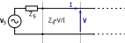
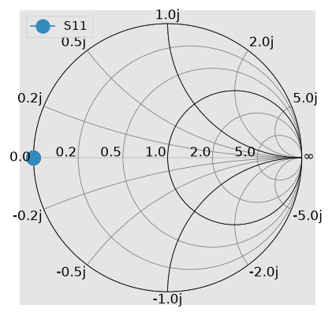
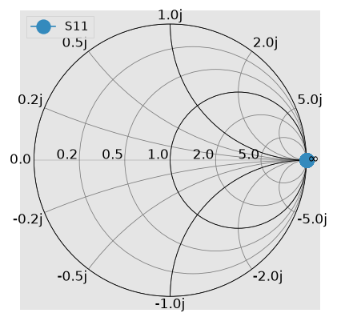

Working with Complex Characteristic Impedance#
This section considers the propagation of electromagnetic waves on a transmission line with a possibly complex characteristic impedance.
TL;DR: scikit-rf use power-waves definition by default. Unless having complex-valued characteristic impedances, this s-parameter definition should not affect your results. However, pay attention that the power-waves definition may lead to incorrect results/interpretations when using complex characteristic impedances, for example for lossy transmission lines.
Characteristic Impedance#
The characteristic impedance \(Z_0\) associated to a transmission line (or any continuous media supporting the propagation of electromagnetic waves) is defined as the ratio of the (forward) voltage and current when the transmission line is infinite (i.e. SWR=1, meaning no reflection from a load and thus no backward voltage and current). It thus characterizes the property of the line to oppose a change in voltage for a change of current or vice-versa. Note that in most cases, it is not an impedance which can be measured using a DC Ohmmeter [1].

Voltage and current are derived quantities from the fundamental electric \(E\) and magnetic fields \(H\) (by mean of line integrals of those fields in the transverse section of a transmission line for given set of boundary conditions). Thus, voltage and current depends of the transmission line geometry and materials and in general their ratio may not be equal to the ratio of \(E/H\). For transmission line supporting other modes than TEM, the definition of voltage and current may even be not unique (like for rectangular waveguides). For completeness, sometime the ratio of the electric field to the magnetic field is called the intrinsic impedance (like in free space).
Thus, \(Z_0\) depends of the characteristics of the material and can be determined from the transmission line distributed circuit parameters (R, L, C, G). In lossless transmission line, \(Z_0\) is real and positive. Most of the time, using a real reference impedance is also OK even for low-loss lines such as coaxial lines[7]. However for other cases, such as lossy lines, microstrip and coplanar waveguides, \(Z_0\) can be complex. Matching problems directed at maximum power transfer can also use scattering parameters referenced to complex impedances [5].
Scattering Parameters Definitions#
When it is necessary to work with a complex reference impedance there are 3 types of waves: traveling-waves, pseudo-waves, and power-waves [2-3]. All of these definitions give the same results for real-values characteristic impedances.
Traveling-waves#
Traveling-waves are the “real” waves in the sense that they are linked directly to Maxwell’s equations and can be measured. For example, “traveling-wave reflection coefficients can be measured by observing the peaks and valleys of the electric fields of the standing wave created by the beating of incident and reflected traveling waves in a slotted-line experiment” [2-3]. The through-reflect-line (TRL) vector-network-analyzer calibration also measures traveling waves [2].
With traveling-waves, the knowledge of the characteristic impedance \(Z_0\) is mandatory to determine the equivalent circuit voltages and currents in microwave circuit theory. However, it is not always possible in practice to determine \(Z_0\), in particular with printed transmission lines. This is the reason why pseudo-waves have been developed.
Pseudo-waves#
Pseudo-waves have been introduced in [2-3] as a solution to the complexity of traveling-waves for lossy transmission lines. While being a mathematical tool, they obey the same rules and formulas that apply to the lossless transmission lines.
They are defined as:
where \(Z_{ref}\) is the reference impedance of the pseudo-wave.
Pseudo-waves are equals to traveling-waves when \(Z_{ref}=Z_0\), where \(Z_0\) is the characteristic impedance of the transmission line. However, if \(Z_{ref}\) is complex-valued, the power \(p\) transmitted by a pseudo-wave through the transmission line is:
which is the same result than for traveling waves [2]. Moreover, if \(Z_{ref}\) is complex-valued, the scattering matrix of a reciprocal device might not be symmetrical.
However, when \(Z_{ref}\) is chosen to be real, \(a\) and \(b\) behave just like traveling-wave amplitude in a lossless transmission line with a real characteristic impedance[2-3,5].
Power-waves#
The scattering matrix as defined above has the fundamental problem that a zero-reflection coefficient does not guarantee maximal power transfer from the generator to the load [5-6]. To remedy this situation, the concept of power-waves has been introduced [4]. It is a mathematical tool which is compatible with the conjugate matching condition. It also gives intuitive total power expressions, as the sum of forward and backward waves, also for complex characteristic impedances.
The power-waves \(a\) and \(b\) are defined from frequency-dependent (complex) port impedance \(Z_0\) [4]:
where \(Z_0^*\) is the complex conjugate of \(Z_0\).
At the contrary of pseudo-waves, power-waves satisfy the power relation:
even when \(Z\) is complex. That is, power-waves have been developed such as zero power-wave reflection coefficient corresponds to maximum power transfer.
Most RF circuit solvers use the power-waves definition (such as ADS, ANSYS Circuit). scikit-rf also uses the power-waves definition by default.
Caveats#
Reflection Coefficient and Smith Chart#
The Smith chart is based on the reflection coefficient \(\Gamma\), a ratio of the impedance of the load \(Z_{load}\) and the reference impedance \(Z_{ref}\) that defines the center of the chart:
Let’s consider the reflection coefficients of a short for both pseudo-waves and power-waves formulations with respect to a complex characteristic impedance:
[1]:
%matplotlib inline
import skrf as rf
rf.stylely()
# this is just for plotting junk
kw = dict(draw_labels=True, marker = 'o', markersize = 10)
For the case of pseudo-waves, the ratio \(b/a\) gives the expected expression for \(\Gamma\). Thus, whatever the reference impedance, the Smith chart for short is as one could expect:
[2]:
# same but paying attention to the s-param definition:
ntw_pseudo = rf.instances.wr10.short()
ntw_pseudo.renormalize(1j, s_def='pseudo')
ntw_pseudo.plot_s_smith(**kw)

However, for power-waves:
[3]:
# default: power wave formulation
ntw_power = rf.instances.wr10.short()
ntw_power.renormalize(1j) # same as renormalize(1j, s_def='power')
ntw_power.plot_s_smith(**kw) # gives an open!

This unexpected behavior is the result of the appearance of \(Z_0^*\) in the definition of the amplitude of the reverse power-wave \(b\), hence changing the reflection coefficient formula:
Thus, in the case of complex characteristic impedance, the Smith chart does not apply with power-waves.
References#
Reference Papers:
[2] R. B. Marks et D. F. Williams, A general waveguide circuit theory, J. RES. NATL. INST. STAN., vol. 97, nᵒ 5, p. 533, sept. 1992, doi: 10/gf3wcs.
[3] D. Williams, Traveling Waves and Power Waves: Building a Solid Foundation for Microwave Circuit Theory, IEEE Microwave, vol. 14, n. 7, p. 38‑45, nov. 2013, doi: 10.1109/MMM.2013.2279494
[4] K. Kurokawa, Power Waves and the Scattering Matrix, IEEE Trans. Microwave Theory Techn., vol. 13, nᵒ 2, p. 194‑202, mars 1965, doi: 10/bdxqv3.
[5] S. Llorente-Romano, A. Garca-Lamperez, T. K. Sarkar, et M. Salazar-Palma, An Exposition on the Choice of the Proper S Parameters in Characterizing Devices Including Transmission Lines with Complex Reference Impedances and a General Methodology for Computing Them, IEEE Antennas Propag. Mag., vol. 55, nᵒ 4, p. 94‑112, août 2013, doi: 10/ggc28m.
[6] J. Rahola, Power Waves and Conjugate Matching, IEEE Transactions on Circuits and Systems II: Express Briefs, vol. 55, nᵒ 1, p. 92‑96, janv. 2008, doi: 10/fgnf7j.
Some Books dealing about this subject:
[7] T. C. Edwards et M. B. Steer, Foundations for microstrip circuit design, Fourth edition. Chichester, West Sussex, United Kingdom: John Wiley & Sons Inc, 2016. Section 4.5 on working with a complex characteristic impedance.
[8] G. Gonzalez, Microwave transistor amplifiers: analysis and design, 2nd ed. Upper Saddle River, N.J: Prentice Hall, 1997. Section 1.4 for generalized scattering parameters and 1.7 for power waves.
[9] P. Russer, Electromagnetics, microwave circuit and antenna design for communications engineering, 2nd ed. Boston, MA: Artech House, 2006. Section 10.2.3 for generalized scattering parameters and transformation tables (used in wikipedia pages).
[10] J. Dobrowolski, Microwave network design using the scattering matrix. Boston: Artech House, 2010.
[11] S. J. Orfanidis, Electromagnetic Waves and Antennas, Chap13: Impedance Matching, 2016.